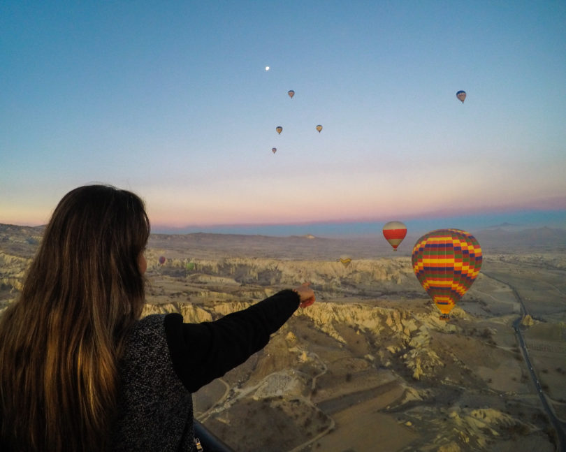
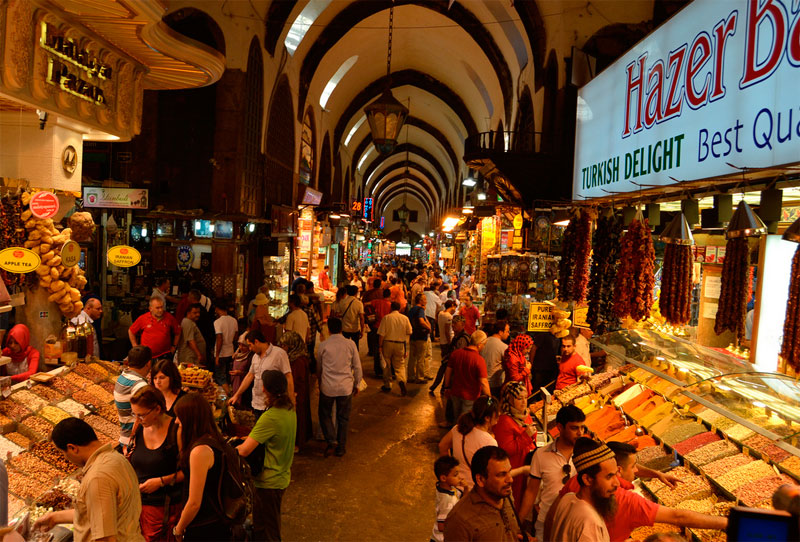
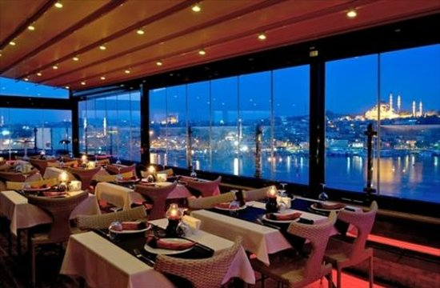
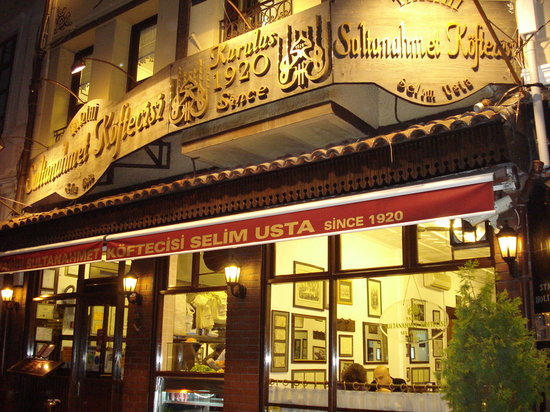
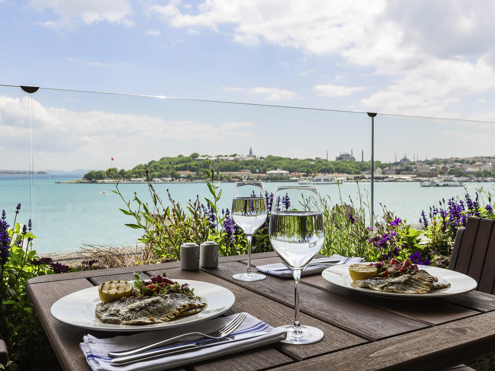

ESTAMBUL
Historia
Estambul es una ciudad importante en Turquía, que se ubica en Europa y Asia a lo largo del estrecho de Bósforo. La Ciudad Antigua refleja las influencias culturales de los distintos imperios que gobernaron la región. En el distrito Sultanahmet, el Hipódromo al aire libre de la era romana fue por siglos un lugar de carreras de carros, y los obeliscos egipcios también permanecen en el lugar. La icónica basílica bizantina Santa Sofía tiene una elevada cúpula del siglo VI y mosaicos cristianos poco comunes.
Sitios que visitariamos
Capadocia
Bazar de las especias
Palacio de los sultanes

Mausoleo Anitkabir

Restaurantes
Peninsula
Azapkapı, Tersane Cd. No:111, 34420 Beyoğlu/İstanbul, Turquía
Sultanahmet
Alemdar, 34110 Fatih/Provincia de Estambul, Turquía
MÜRVER RESTAURANT
Kemankeş Karamustafa Paşa, İETT Karaköy Durağı 57-59, 34425 Beyoğlu/İstanbul, Turquía
Itinerario
- Día 1: ciudad de origen - Estambul A la hora prevista, salida en vuelo internacional con destino a Estambul. Noche a bordo.
- Día 2: Estambul Llegada, recepción y traslado al hotel elegido. Alojamiento.
- Día 3: Estambul – Capadocia Desayuno. Día libre con posibilidad de realizar visita a capadacio para conocer sus atracciones y dar un viaje en globo. A medio día Disfrutaremos de un Almuerzo típico en restaurante local en la zona de Sultanahmet y continuaremos con la visita a la Mezquita Azul, prodigio de armonía, proporción y elegancia; y al Hipódromo que conserva el Obelisco de Teodosio, la Columna Serpentina, la Fuente del Emperador Guillermo y el Obelisco Egipcio.al final de la tarde visitaremos al famoso Gran bazar donde disfrutaremos de tiempo libre para perdernos entre sus 4 mil tiendas. Vuelta al hotel y Alojamiento.
- Día 4: Estambul - Paseo por el Bósforo - Bazar de las especias Desayuno. Salida para realizar una de las actividades más famosas de Estambul, un paseo en barco por el Bósforo, canal que separa Europa y Asía. Durante este trayecto se aprecian los palacios de los Sultanes, antiguas y típicas casas de Madera y disfrutar de la historia de una manera diferente. A continuación, realizaremos una de las visitas estrella, el bazar de las especias, constituido por los otomanos hace 5 siglos y usado desde entonces. Nuestra visita termina en el bazar donde podrán disfrutar de su ambiente y variedad de tiendas. Alojamiento
- Día 5: Estambul - Ankara Desayuno. salida en ruta con destino a Ankara pasando por las montañas de Bolu. Tras la llegada realizaremos una visita panorámica con nuestro autocar para conocer a la capital de la República Turca y la segunda ciudad más poblada de Turquía (Ankara), una ciudad moderna y cosmopolita impregnada de historia y cultura antigua. Posteriormente conoceremos al Mausoleo Anitkabir símbolo de Ankara, pues se trata del lugar donde yace el fundador de la República Turca. Al final de la tarde Llegada a nuestro hotel Cena y alojamiento.
- Día 6: Estambul - Ciudad de origen Desayuno y a la hora indicada traslado al aeropuerto, para tomar vuelo de regreso a tu ciudad de origen. Llegada y fin de nuestros servicios.